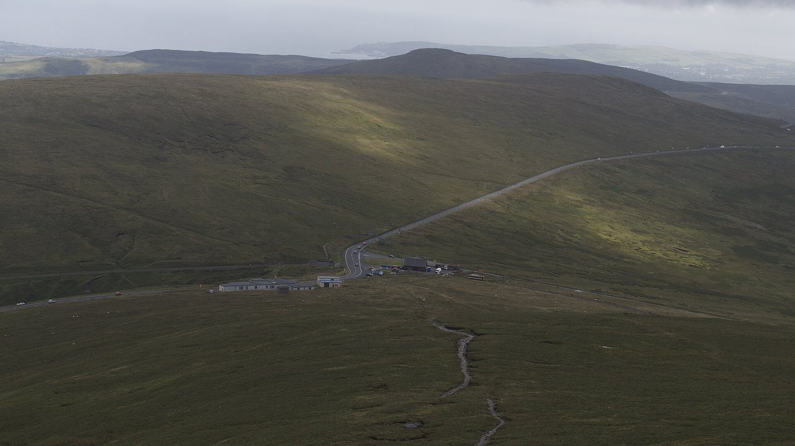

Race, Isle of Man Mountain Course

Behind
Best +0:01
371W
Target 418 W-47 W
- Cadence
- 87rpm
- Heart
- 140bpm
- Speed
- 26.5km/h
Recover5 of 19
0:33
Next: · 0:10 at level 24
+5.5%
115 m climbed
1.81 km
14
Resistance / 32
Solo races your best-time ghost: position reads Ahead or Behind, and solo alone gets a Pause button. Frozen at 4:27.